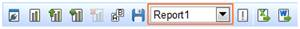
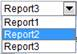
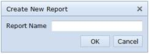
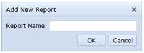
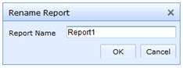
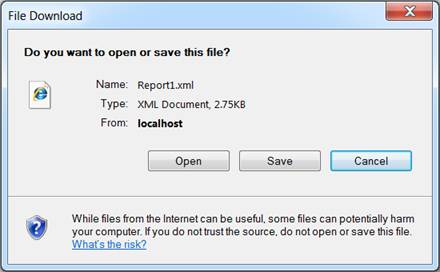
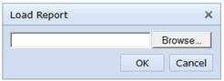

Report List
Report List will hold all the reports of the current session of the OLAP Client control.


Figure 28: Report List
On report change
When we make a change in the report, all the controls will get populated with the data contained in the selected report.
The Cube Dimension Browser will get populated with the cube data mentioned in the selected report.
Each axis in the Axis Element Builder will get loaded with the appropriate element mentioned in the selected report.
The Chart and Grid will reflect the output of the selected report.
On clicking Create a new report, a dialog appears asking for the report name and on the Ok event a new report is added to the existing Report List clearing all the existing report(s).
Figure 29: Creating a new report

Figure 30: Report Name
This can also be done through an API which is mentioned in the following code snippet.
|
[C#] this.olapClient1.CreateNewReport(); |
|
[VB] Me.olapClient1.CreateNewReport() |
Adding a new report
On clicking Add a new report, a dialog appears asking for the report name and on the Ok event a new report is added to the existing report list.
Figure 31: Add a new report

Figure 32: Report Name
On clicking Remove the selected report, the current report is removed. If only one report is available in the report list, then it will be automatically disabled.
Figure 33: Remove the selected report

Figure 34: Selecting the desired report for deletion
This can also be done through an API which is mentioned in the following code snippet.
|
[C#] this.olapClient1.RemoveReport(); |
|
[VB] Me.olapClient1.RemoveReport () |
Renaming a report
On clicking Rename the selected report, a dialog appears asking for a new report name to replace the existing report name.

Figure 35: Rename the selected report

Figure 36: Report Name
Save the current report stores the current report set contained in the report list in a user specified location.
Figure 37: Save the current report

Figure 38: Saving the report
This can also be done through an API which is mentioned in the following code snippet.
|
[C#] this.olapClient1.SaveReportSet(); |
|
[VB] Me.olapClient1.SaveReportSet() |
Load saved report option in the toolbar loads a report from the user specified location and binds it in the report list as well as in the chart and grid controls.

Figure 39: Loading a report